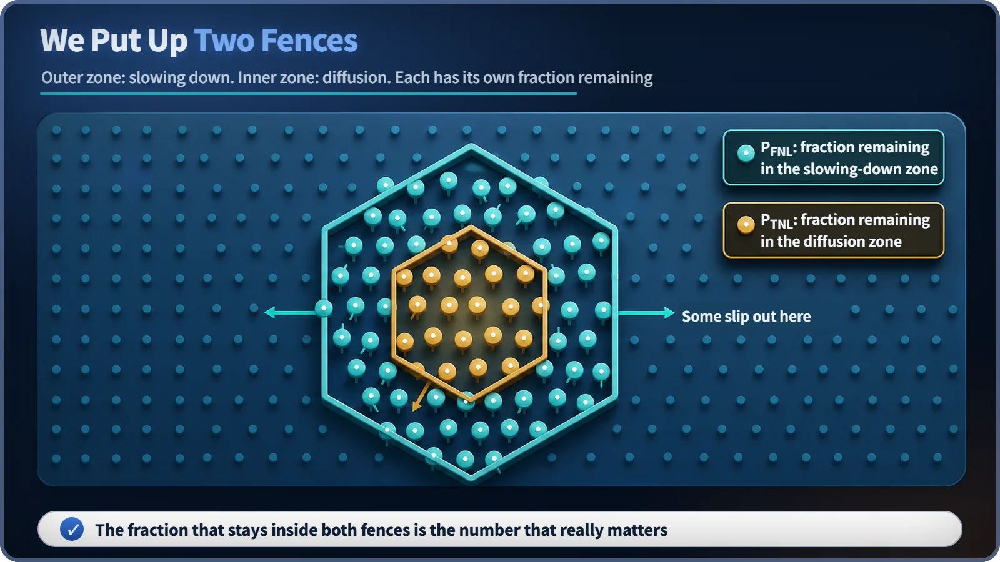
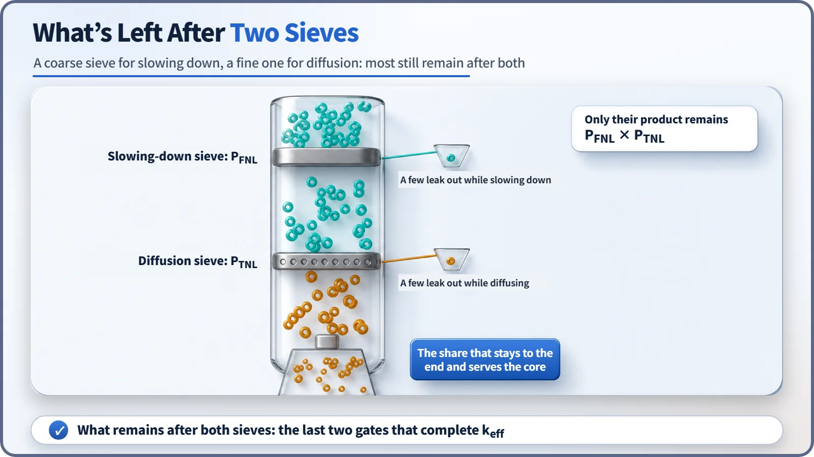

Neutron Physics & the Core · 090
How Many Sheep Stay Inside the Double Fence? What the Non-Leakage Probability Means
A neutron has two chances to leak out of the core: while it slows down and while it diffuses. The non-leakage probability counts the ones that stay.
Not every neutron born in a real reactor core stays inside it. The non-leakage probability is the fraction that does not escape across the core boundary, and it is decided twice: once while neutrons slow down (P_FNL) and once while they diffuse as thermal neutrons (P_TNL). Their product links the idealized k∞ to the real k_eff: k_eff = k∞ × P_FNL × P_TNL. [1]
From a room without walls to a real core
Imagine a reactor that goes on forever in every direction, a room with no walls. In that idealized room, no neutron can ever get out, and the multiplication factor you calculate there is called k∞ (k-infinity). The moment you put real walls around it, though, some neutrons slip out through the edges. That loss is called leakage, and to get the value for a real reactor, k_eff, you multiply k∞ by "the fraction that didn't leak and stayed in."
This time, let's look at it from the other side: not "how much leaked?" but "how much stayed?" And that "fraction that stayed" isn't decided once. It's decided twice, because a neutron's journey through the core has two stages, not one.
Put a double fence around the pasture
Picture a ranch. Newborn lambs are let loose on a wide outer pasture, where they run around wildly. Over time they tire, slow down, and finally settle into a small pen in the middle of the ranch. The ranch has two fences: a big outer fence for the lively, running lambs, and a small inner fence around the pen where the tired ones settle.
Neither fence is perfect. A few lambs bouncing around near the outer fence jump it and leave the ranch before they ever get tired. And among the sheep settling near the inner fence, some sneak over the wall before they're fully settled in the pen. So the real questions are: "What percentage of the flock stays inside the outer fence?" and "What percentage also stays inside the inner fence?"

Neutrons in a reactor go through exactly these two stages. A neutron born in fission flies out very fast (a fast neutron) and slows down by bumping again and again into the moderator, the material that slows neutrons down (usually water). This slowing process is called moderation, and during it the neutron travels a considerable distance. Once it has slowed to about the same energy as the surrounding material, it's called a thermal neutron. The thermal neutron then wanders around the core (this is called diffusion) until it is finally absorbed somewhere and its journey ends.
For each of these two stages, the probability that the neutron stays inside without crossing the core boundary is defined separately. That's today's star: the non-leakage probability. [1]
The fraction left during slowing down, and the fraction left during diffusion
First, the slowing-down stage. While a newborn fast neutron rattles through the moderator losing speed, the probability that it finishes slowing down without hitting the core boundary and flying out is called the fast non-leakage probability, written P_FNL. In the ranch analogy, it's the fraction that stays inside the outer fence.
After slowing down and becoming thermal, the neutron faces a second gate. A thermal neutron isn't absorbed right away; it wanders the core for quite a while before something, fuel or another material, absorbs it. The probability that it stays inside the core boundary during this diffusion is the thermal non-leakage probability, written P_TNL: the fraction that stays inside the inner fence.
Why split it in two? The neutron moves differently in each stage. A fast neutron being slowed down travels relatively far, in long strides, as it loses speed; a thermal neutron, already slow, roams a much smaller area for a long time. Different distances and different ways of moving mean different chances of reaching the boundary and leaking out, so reactor physics treats these as two separate probabilities from the start. [1] [2]

Just multiply, and that's the P_NL you met before
The usual shorthand for the effective multiplication factor is k_eff = k∞ × P_NL, with a single, lumped non-leakage probability P_NL. That P_NL is actually the product of the two probabilities we've just separated:
k_eff = k∞ × P_FNL × P_TNL
From the birth of one neutron generation to the next, a neutron has to pass two "did it stay?" checkpoints, once during slowing down (P_FNL) and once during diffusion (P_TNL), before it can fully contribute inside the core. Both probabilities lie between 0 and 1, and because they multiply, if either one is particularly low, the whole value drops with it. Within the six-factor formula, these two are the final two gates, multiplied together with the other four (the reproduction factor, the fast fission factor, the resonance escape probability and the thermal utilization factor) to complete k_eff. [1]
How is this different from resonance escape or thermal utilization?
As "reasons neutrons are lost in the core," the non-leakage probabilities can look like the resonance escape probability (p) and the thermal utilization factor (f). But they describe completely different kinds of loss.
The non-leakage probabilities (P_FNL, P_TNL) deal with a geometric loss: the neutron leaves the core boundary altogether. The resonance escape probability and thermal utilization factor deal with a loss where the neutron stays in the core but is absorbed and lost in some material other than the fuel we want. One disappears by "going outside"; the other disappears "while staying inside." Both eat into k_eff, but they happen in different places for different physical reasons.
It's also worth remembering that P_FNL and P_TNL are not the same value. Because neutrons move differently during slowing down and during diffusion, the two probabilities generally differ.
Why a small core is at a disadvantage, and how design accounts for it
Both non-leakage probabilities are set, qualitatively, by comparing "how far the neutron travels in that stage" with "how big the core is." If the core is large compared with that travel distance, the neutron will probably finish slowing down or be absorbed before reaching the edge, so P_FNL and P_TNL both get close to 1. The smaller the core, the more chances it has to reach the boundary, and both probabilities shrink. As a core gets bigger, its volume grows much faster than its surface area, so the larger it is, the smaller the relative share of its "edge." [2]
That doesn't mean a small core is dangerous. When relatively small cores are used, as in research reactors or small modular reactors, designers already know about this and allow for it. They make up for lower non-leakage probabilities by surrounding the core with a reflector that bounces escaping neutrons back in, or by raising the fuel enrichment to make the other factors more favorable. In other words, it's not the low non-leakage probability itself but how well the rest of the design has been matched to it that determines actual safety and performance.
Today's one-line takeaways
- The non-leakage probability is the probability that a neutron stays inside the core boundary, and it is decided twice: the fast non-leakage probability (P_FNL) during slowing down and the thermal non-leakage probability (P_TNL) during diffusion.
- k_eff = k∞ × P_FNL × P_TNL: the lumped P_NL in the shorthand k_eff = k∞ × P_NL is really P_FNL multiplied by P_TNL.
- Non-leakage (loss across the core boundary) is a different kind of loss from resonance escape and thermal utilization (loss by absorption in other materials inside the core).
- The larger the core, the closer both probabilities get to 1; the smaller, the lower they are. Designers compensate at the design stage with reflectors or fuel enrichment.